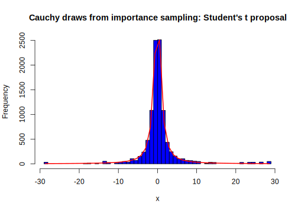

4.4 Convergence diagnostics
MCMC methods rely on irreducibility, positive recurrence, and aperiodicity, ensuring that, after a sufficient burn-in (warm-up) period, the posterior draws are sampled from the invariant stationary posterior distribution. This can be achieved by running multiple chains initiated at different points and then mixing them, or by running a single longer chain. In this book, we follow the latter approach, as suggested by Geyer (1992).
In this section, we present diagnostics to assess whether the sample draws come from the stationary posterior distribution. First, we calculate the numerical standard error associated with the MCMC algorithm. Next, we review the effective number of simulation draws and various convergence tests. Finally, we examine potential errors in the posterior simulator.
4.4.1 Numerical standard error
Many times, the goal in Bayesian inference is to obtain a set of independent draws \(\boldsymbol{\theta}^{(s)}\), \(s = 1, 2, \dots, S\), from the posterior distribution, such that a measure of interest can be estimated with reasonable precision. In particular, we approximate Equation (4.1) using Equation (4.2). By the central limit theorem, we know that
\[ \begin{equation} \frac{\bar{h}(\boldsymbol{\theta})_S - \mathbb{E}_{\pi}[h(\boldsymbol{\theta})]}{\sigma_h(\boldsymbol{\theta})/\sqrt{S}} \stackrel{d}{\rightarrow} N(0, 1), \tag{4.4} \end{equation} \]
where \(\sigma^2_h(\boldsymbol{\theta})\) is the variance of \(h(\boldsymbol{\theta})\).
If we have independent draws, we can estimate \(\sigma^2_h(\boldsymbol{\theta})\) using the posterior draws as follows:
\[ \hat{\sigma}^2_{Sh}(\boldsymbol{\theta}) = \frac{1}{S} \sum_{s=1}^S \left[h(\boldsymbol{\theta}^{(s)})\right]^2 - \left[\bar{h}(\boldsymbol{\theta})_S\right]^2. \]
However, if there are dependent draws, we have
\[ \hat{\sigma}^{2*}_{Sh}(\boldsymbol{\theta}) = \frac{1}{S} \left\{\sum_{s=1}^S \left[h(\boldsymbol{\theta}^{(s)})-\bar{h}(\boldsymbol{\theta})_S\right]^2 + 2\sum_{l=k+1}^K \big(h(\boldsymbol{\theta}^{(l)}) - \bar{h}(\boldsymbol{\theta})\big)\big(h(\boldsymbol{\theta}^{(l-k)}) - \bar{h}(\boldsymbol{\theta})\big)\right\}. \]
The numerical standard error is given by \(\sigma_h(\boldsymbol{\theta})/\sqrt{S}\) and serves as a measure of the approximation error in the Monte Carlo integration. Note that this error can be decreased by increasing \(S\). For instance, \(S = 1000\) implies an error proportional to 3.2%, while \(S = 10000\) reduces the error to approximately 1%.
4.4.2 Effective number of simulation draws
MCMC posterior draws are not independent; therefore, the effective sample size of the posterior chains is not equal to \(S\). To assess the effective sample size of the posterior draws, we use the following measure:
\[ S_{\text{ef}} = \frac{S}{1 + 2\sum_{k=1}^{\infty} \rho_k(h)}, \]
where \(\rho_k(h)\) is the autocorrelation of the sequence \(h(\boldsymbol{\theta})\) at lag \(k\).
The sample counterpart of this expression is:
\[ \hat{S}_{\text{ef}} = \frac{S}{1 + 2\sum_{k=1}^{K} \hat{\rho}_k(h)}, \]
where
\[ \hat{\rho}_k(h) = \frac{\sum_{l=k+1}^K \big(h(\boldsymbol{\theta}^{(l)}) - \bar{h}(\boldsymbol{\theta})\big)\big(h(\boldsymbol{\theta}^{(l-k)}) - \bar{h}(\boldsymbol{\theta})\big)}{\sum_{s=1}^K \big(h(\boldsymbol{\theta}^{(s)}) - \bar{h}(\boldsymbol{\theta})\big)^2}. \]
If \(\hat{\rho}_k(h)\) declines to zero slowly as \(k\) increases, it indicates significant memory in the draws. Consequently, the effective sample size of the posterior draws is small, and it becomes necessary to either decrease the autocorrelation or increase the number of posterior draws.
Note that
\[ \hat{\sigma}^{2*}_{Sh}(\boldsymbol{\theta}) = \hat{\sigma}^2_{Sh}\left(\boldsymbol{\theta}\right) (1+2\sum_{k=1}^K \hat{\rho}_k(h)), \]
where \(\hat{\sigma}^{2*}_{Sh}(\boldsymbol{\theta})\) and \(\hat{\sigma}^2_{Sh}\) are the simulation variances using dependent and independent draws, and \(\hat{\kappa}(h) = (1+2\sum_{k=1}^K \hat{\rho}_k(h))\) is called the inefficiency factor, which represents the inflation of the simulation variance due to autocorrelation in the draws. Values near one indicate draws with little correlation.
4.4.3 Tests of convergence
Regarding convergence issues, there are several diagnostics to assess the adequacy of the posterior chains. In particular, graphical approaches such as trace plots and autocorrelation plots are widely used. Trace plots display the sampled values of a parameter (or multiple parameters) as a function of the iteration number, while autocorrelation plots graphically represent \(\hat{\rho}_k\). The latter shows how correlated the values of \(\boldsymbol{\theta}\), or functions of \(\boldsymbol{\theta}\), are at different lags. Trace plots should fluctuate around a stable mean, exploring the entire parameter space without becoming stuck in any particular region. Autocorrelation plots, on the other hand, should exhibit values close to zero or diminish quickly as the lag increases.
Additionally, Geweke’s test (J. Geweke 1992) provides a simple two-sample test of means. If the mean of the first window (10% of the chain) is not significantly different from the mean of the second window (50% of the chain), we do not reject the null hypothesis that the two segments of the chain are drawn from the same stationary distribution.
The Raftery and Lewis test (A. E. Raftery and Lewis 1992) is designed to calculate the approximate number of iterations (\(S\)), burn-in (\(b\)), and thinning parameter (\(d\)) required to estimate \(p\left[H(\boldsymbol{\theta}) \leq h\right]\), where \(H(\boldsymbol{\theta}): \mathcal{R}^K \rightarrow \mathcal{R}\). This calculation is based on a specific quantile of interest (\(q\)), precision (\(r\)), and probability (\(p\)). The diagnostic is based on the dependence factor, \(I = \frac{S + b}{S_{\text{Min}}}\), where \(S_{\text{Min}} = \Phi^{-1}\left(\frac{1}{2}(p+1)\right)^2 q(1-q) / r^2\), and \(\Phi(\cdot)\) is the standard normal cumulative distribution function. Values of \(I\) much greater than 5 indicate a high level of dependence.
Heidelberger and Welch’s test (Heidelberger and Welch 1983) uses a Cramér-von Mises statistic to test the null hypothesis that the sampled values, \(\boldsymbol{\theta}^{(s)}\), are drawn from a stationary distribution. The statistic is given by:
\[ \text{CVM}(B_S) = \int_0^1 B_S(t)^2 \, dt, \]
where \(B_S(t) = \frac{S_{\left[St\right]} - \left[St\right] \bar{\boldsymbol{\theta}}^S}{\sqrt{S p(0)}}\), \(S_S = \sum_{s=1}^S \boldsymbol{\theta}^{(s)}\), \(\bar{\boldsymbol{\theta}}^S = S_S / S\), and \(p(0)\) is the spectral density at 0, with \(0 \leq t \leq 1\). Under the null hypothesis, \(B_S(t)\) converges in distribution to a Brownian bridge.
This test is recursively applied until either the null hypothesis is not rejected, or \(s = 50\%\) of the chain has been discarded. Subsequently, the half-width test calculates a 95% confidence interval for the mean using the portion of the chain that passed the stationarity test. If the ratio of the half-width of this interval to the mean is less than 0.1, the test is considered passed. This indicates no evidence to reject the null hypothesis that the estimated mean is accurate and stable.
There are other diagnostics in Bayesian inference that we do not mention here, such as the Gelman and Rubin test (Andrew Gelman and Rubin 1992). This is because we focus on the available diagnostics in our Graphical User Interface (GUI).
4.4.4 Checking for errors in the posterior simulator
In this book, we provide basic code templates to get posterior draws for performing inference under the Bayesian framework when there is no closed-form solution. We are prone to making mistakes and greatly appreciate your feedback to help improve our code and identify any other potential issues. One way to check if our code works correctly is to perform simulations where the population parameters are known. If the code is functioning properly, the posterior estimates should converge to these values as the sample size increases due to the Bayesian consistency. This is an informal approach to identifying potential mistakes.
John Geweke (2004) offers a more formal method for code validation. The starting point is the joint density \(p(\boldsymbol{y}, \boldsymbol{\theta}) = p(\boldsymbol{y} \mid \boldsymbol{\theta}) \pi(\boldsymbol{\theta})\) and a test function \(h(\boldsymbol{y}, \boldsymbol{\theta})\) such that \(\sigma_h^2 = \text{Var}[h(\boldsymbol{y}, \boldsymbol{\theta})] < \infty\).
Assume that there is a marginal-conditional simulator for the joint distribution of \(\boldsymbol{y}\) and \(\boldsymbol{\theta}\):
\[\begin{align} \boldsymbol{\theta}^{(s)} &\sim \pi(\boldsymbol{\theta}) \\ \boldsymbol{y}^{(s)} &\sim p(\boldsymbol{y} \mid \boldsymbol{\theta}^{(s)}) \\ h^{(s)} &= h(\boldsymbol{y}^{(s)}, \boldsymbol{\theta}^{(s)}). \end{align}\]
The sequence \(\left\{\boldsymbol{y}^{(s)}, \boldsymbol{\theta}^{(s)}\right\}\) is i.i.d., \(\bar{h}_S\) converges almost surely to \(\mathbb{E}[h(\boldsymbol{y}, \boldsymbol{\theta})]\), and there is convergence in distribution when \(\bar{h}_S\) is well standardized (see Equation (4.4)) and \(\hat{\sigma}^2_{Sh}(\boldsymbol{\theta})\) converges to \({\sigma}^2_h(\boldsymbol{\theta})\) almost surely.
A posterior simulator produces draws \(\boldsymbol{\theta}^{(s)}\) given a particular realization \(\boldsymbol{y}_{\text{Obs}}\), using the transition density \(q(\boldsymbol{\theta} \mid \boldsymbol{\theta}^{(s-1)}, \boldsymbol{y}_{\text{Obs}})\). Thus, a successive-conditional simulator consists of an initial draw \(\boldsymbol{\theta}^{(0)}\) from \(\pi(\boldsymbol{\theta})\) followed by:
\[\begin{align} \boldsymbol{y}^{(l)} &\sim p(\boldsymbol{y} \mid \boldsymbol{\theta}^{(l-1)}) \\ \boldsymbol{\theta}^{(l)} &\sim q(\boldsymbol{\theta} \mid \boldsymbol{y}^{(l)}, \boldsymbol{\theta}^{(l-1)}) \\ h^{(l)} &= h(\boldsymbol{y}^{(l)}, \boldsymbol{\theta}^{(l)}), \end{align}\]
where \(\bar{h}_L = L^{-1} \sum_{l=1}^L h(\boldsymbol{y}^{(l)}, \boldsymbol{\theta}^{(l)})\) converges almost surely to \(\mathbb{E}[h(\boldsymbol{y}, \boldsymbol{\theta})]\), and there is convergence in distribution when \(\bar{h}_L\) is well standardized, and \(\hat{\sigma}^{*2}_{Lh}(\boldsymbol{\theta})\) converges to \({\sigma}^2_h(\boldsymbol{\theta})\) almost surely, for \(l = 1, 2, \dots, L\). Thus,
\[\begin{align} \frac{\bar{h}_S - \bar{h}_L}{\left( S^{-1} \hat{\sigma}^2_{Sh}(\boldsymbol{\theta}) + L^{-1} \hat{\sigma}^{*2}_{Lh}(\boldsymbol{\theta}) \right)^{1/2}} &\stackrel{d}{\rightarrow} N(0, 1). \end{align}\]
Thus, we can test \(H_0. \ \bar{h}_S - \bar{h}_L = 0\) versus \(H_1. \ \bar{h}_S - \bar{h}_L \neq 0\). Rejection of the null indicates potential errors in implementing the posterior simulator.
Example: Mining disaster change point continues
Let’s revisit the mining disaster change point example from subsection 4.1.1 and examine some convergence diagnostics for the posterior draws of the rate of disasters after the change point (\(\lambda_2\)). The following code demonstrates how to perform these diagnostics using the R package coda. For clarity and replicability of the results, we present the Gibbs sampler again.
The following two figures show the trace and autocorrelation plots. We observe that the posterior draws of \(\lambda_2\) appear stationary around their mean, and the autocorrelation decreases rapidly to zero.
The mean and standard deviation of the rate after the change point are 0.92 and 0.12, respectively. The naive and time series standard errors are 0.0008245 and 0.0008945, respectively. The naive standard error assumes iid posterior draws, whereas the time series standard error accounts for autocorrelation. Both standard errors are very similar, indicating a low level of autocorrelation, which is consistent with the results shown in the second figure. The effective sample size of the posterior draws is 16,991, while the total number of posterior draws is 20,000 after a burn-in period of 1,000.
The Geweke test statistic is 1.43, which implies no statistical evidence to reject the null hypothesis of equal means in the two segments of the posterior draws. The Raftery and Lewis test yields a dependence factor near 1, indicating a low level of dependence. The Heidelberger and Welch test does not reject the null hypothesis of stationarity for the posterior draws and also confirms that the mean is accurate and stable.
In summary, all posterior diagnostics indicate that the posterior draws originate from an invariant stationary distribution.
The second part of the code implements the proposal by John Geweke (2004) to assess the reliability of the posterior simulator. The parameter vector is defined as \(\boldsymbol{\theta} = [\lambda_1 \ \lambda_2 \ H]\), and the first moments of these parameters are used as test functions. We do not reject the null hypothesis of equal means across the three test functions, indicating that the posterior simulator is functioning correctly.
To evaluate the effectiveness of the test, we run the marginal-conditional simulator with prior parameters \(\alpha_{l0} = 0.5\) and \(\beta_{l0} = 1\), \(l = 1, 2\). In contrast, for the successive-conditional simulator, we use prior parameters \(\alpha_{l0} = 1\) and \(\beta_{l0} = 0.5\), \(l = 1, 2\). In this case, we reject the null hypothesis in two out of three test functions, suggesting that the test performs well in this example.
rm(list = ls())
set.seed(010101)
dataset<-read.csv("https://raw.githubusercontent.com/besmarter/BSTApp/refs/heads/master/DataApp/MiningDataCarlin.csv",header=T)
attach(dataset)## The following objects are masked from dataset (pos = 5):
##
## Count, year## 'data.frame': 112 obs. of 2 variables:
## $ year : int 1851 1852 1853 1854 1855 1856 1857 1858 1859 1860 ...
## $ Count: int 4 5 4 1 0 4 3 4 0 6 ...a10 <- 0.5; a20 <- 0.5
b10 <- 1; b20 <- 1
y <- Count
sumy <- sum(Count); T <- length(Count)
theta1 <- NULL; theta2 <- NULL
kk <- NULL; H <- 60
MCMC <- 20000; burnin <- 1000; S <- MCMC + burnin; keep <- (burnin+1):S
pb <- winProgressBar(title = "progress bar", min = 0, max = S, width = 300)
for(s in 1:S){
a1 <- a10 + sum(y[1:H])
b1 <- b10+H
theta11 <- rgamma(1,a1,b1)
theta1 <- c(theta1,theta11)
a2 <- a20 + sum(y[(1+H):T])
b2 <- b20 + T-H
theta22 <- rgamma(1,a2,b2)
theta2 <- c(theta2,theta22)
pp<-NULL
for(l in 1:T){
p <- exp(l*(theta22-theta11))*(theta11/theta22)^(sum(y[1:l]))
pp <- c(pp,p)
}
prob <- pp/sum(pp)
H <- sample(1:T,1,prob=prob)
kk <- c(kk,H)
setWinProgressBar(pb, s, title=paste( round(s/S*100, 0),"% done"))
}
close(pb)## NULL##
## Iterations = 1:20000
## Thinning interval = 1
## Number of chains = 1
## Sample size per chain = 20000
##
## 1. Empirical mean and standard deviation for each variable,
## plus standard error of the mean:
##
## Mean SD Naive SE Time-series SE
## 3.049150 0.282297 0.001996 0.002155
##
## 2. Quantiles for each variable:
##
## 2.5% 25% 50% 75% 97.5%
## 2.517 2.855 3.042 3.235 3.625##
## Iterations = 1:21000
## Thinning interval = 1
## Number of chains = 1
## Sample size per chain = 21000
##
## 1. Empirical mean and standard deviation for each variable,
## plus standard error of the mean:
##
## Mean SD Naive SE Time-series SE
## 40.15843 2.48171 0.01713 0.01973
##
## 2. Quantiles for each variable:
##
## 2.5% 25% 50% 75% 97.5%
## 36 39 40 41 46##
## Iterations = 1:20000
## Thinning interval = 1
## Number of chains = 1
## Sample size per chain = 20000
##
## 1. Empirical mean and standard deviation for each variable,
## plus standard error of the mean:
##
## Mean SD Naive SE Time-series SE
## 0.9151697 0.1165952 0.0008245 0.0008945
##
## 2. Quantiles for each variable:
##
## 2.5% 25% 50% 75% 97.5%
## 0.7010 0.8343 0.9104 0.9914 1.1564

##
## Quantile (q) = 0.025
## Accuracy (r) = +/- 0.005
## Probability (s) = 0.95
##
## Burn-in Total Lower bound Dependence
## (M) (N) (Nmin) factor (I)
## 2 3865 3746 1.03##
## Fraction in 1st window = 0.1
## Fraction in 2nd window = 0.5
##
## var1
## 1.431##
## Stationarity start p-value
## test iteration
## var1 passed 1 0.196
##
## Halfwidth Mean Halfwidth
## test
## var1 passed 0.915 0.00175## var1
## 16990.59# Marginal-conditional simulator
Theta1Prior <- rgamma(MCMC,a10,b10); Theta2Prior <- rgamma(MCMC,a20,b20)
kPrior <- sample(1:T, MCMC, replace = TRUE, prob = rep(1/T,T))
ytPrior <- function(par){
y1t <- rpois(par[3], par[1])
if(par[3] == T){y2t <- NULL
}else{y2t <- rpois(T-par[3], par[2])
}
yt <- c(y1t, y2t)
return(yt)
}
pars1 <- cbind(Theta1Prior, Theta2Prior, kPrior); Yt <- apply(pars1, 1, ytPrior)
parsmcmc1 <- coda::mcmc(pars1); Summ1 <- summary(parsmcmc1)
# Successive-conditional simulator
SucConSim <- function(a10, b10, a20, b20, par){
y <- ytPrior(par)
theta1 <- par[1]; theta2 <- par[2]; H <- par[3]
a1 <- a10 + sum(y[1:H]); b1 <- b10+H
theta11 <- rgamma(1,a1,b1)
if(H == T){ a2 <- a20
}else{ a2 <- a20 + sum(y[(1+H):T])
}
b2 <- b20 + T-H; theta22 <- rgamma(1,a2,b2); pp<-NULL
for(l in 1:T){
p <- l*(theta22-theta11) + (sum(y[1:l]))*log(theta11/theta22)
pp <- c(pp,p)
}
pps <- exp(pp - max(pp)); prob <- pps/sum(pps)
H <- sample(1:T, 1, prob=prob)
parNew <- list(y = y, pars = c(theta11, theta22, H))
return(parNew)
}
a10 <- 0.5; b10 <- 1; a20 <- 0.5; b20 <- 1
# a10 <- 1; b10 <- 0.5; a20 <- 1; b20 <- 0.5
par1 <- rgamma(1,a10,b10); par2 <- rgamma(1,a20,b20)
par3 <- sample(1:T, 1, replace = TRUE, prob = rep(1/T,T))
pars2 <- matrix(NA, MCMC, 3); pars2[1,] <- c(par1, par2, par3)
for(s in 2:MCMC){
Res <- SucConSim(a10 = a10, b10 = b10, a20 = a20, b20 = b20, par = pars2[s-1,])
pars2[s, ] <- Res$pars
}
parsmcmc2 <- coda::mcmc(pars2); Summ2 <- summary(parsmcmc2)
TestGeweke <- function(j){
Test <- (Summ1[["statistics"]][j,1] - Summ2[["statistics"]][j,1])/(Summ1[["statistics"]][j,4]+Summ2[["statistics"]][j,4])^0.5
Reject <- abs(Test) > qnorm(0.975)
return(list(Test = Test, Reject = Reject))
}
TestGeweke(1); TestGeweke(2); TestGeweke(3)## $Test
## Mean
## -0.0966628
##
## $Reject
## Mean
## FALSE## $Test
## Mean
## -0.2038595
##
## $Reject
## Mean
## FALSE## $Test
## Mean
## 0.7029845
##
## $Reject
## Mean
## FALSE